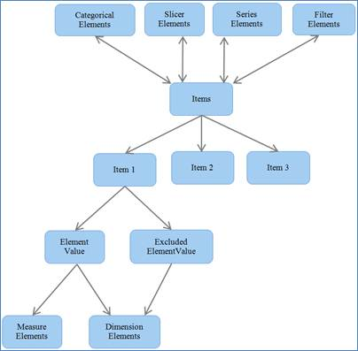

OlapReport is an object that contains information about the cube element that has to be included for processing along its axis position and filter and sorting constraints. OlapReport has categorized the elements based on their characteristics as below:
· Dimension Element
o Hierarchy Element
o Level Element
o Member Elements
· Measure Element
· KPI Element
· NamedSet Element
· Sort Element
· Calculated Member
· Subset Element
· Summary Element
These elements are to get the cube element information from the user. You can create an instance of this element and add the required information about the element to pick that specific element from the data base for processing.
These elements come under the following four elements group, which are based on the axis position and filtering constraints.
· Categorical Elements – contains the elements that has to come under categorical axis
· Series Elements – contains elements that has to come under series axis
· Slicer Elements – contains elements that have to come under slicer elements.
· Filter Elements – contains elements that are subjected to filter.
All the elements are internally maintained as Item.

.
Figure 4: Architecture of Items
 Key Performance Indicator (KPI) Element
Key Performance Indicator (KPI) Element
Filtering slicer elements by range